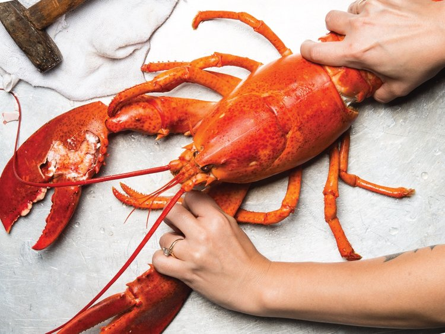

Seafood

Description
- seafood, edible aquatic animals, excluding mammals, but including both freshwater and ocean creatures.
- Most nontoxic aquatic species are exploited for food by humans.
- Even those with toxic properties, such as certain blowfish, can be prepared so as to circumvent harm to the consumer.
- Fish and other seafood may be humanity’s most important food, after cereals, furnishing about 15 percent of the world population’s protein intake.
- Lean fish muscle provides 18–25 percent protein by weight, the equivalent of beef or poultry, but is much lower in calories.
- In fish one gram of protein is present for 4 to 10 calories, as contrasted with 10–20 calories per protein gram for lean meats and up to 30 for fatty meats.
Ingredients
- Live lobsters, 1 per person.
- A large pot of salted water.
- Salt, for seasoning the water.
- Butter.
- Bread for dipping into the lobster-infused butter.
Steps
- Bring a large pot of salted water to a boil.
- Lower the lobsters into the pot.
- Boil lobsters for 7 to 14 mins, depending on size.
- Remove the lobsters from pot to drain.